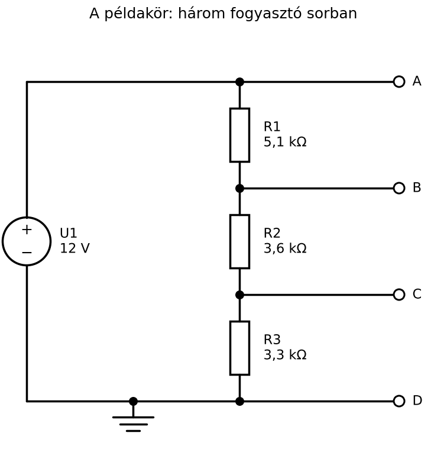
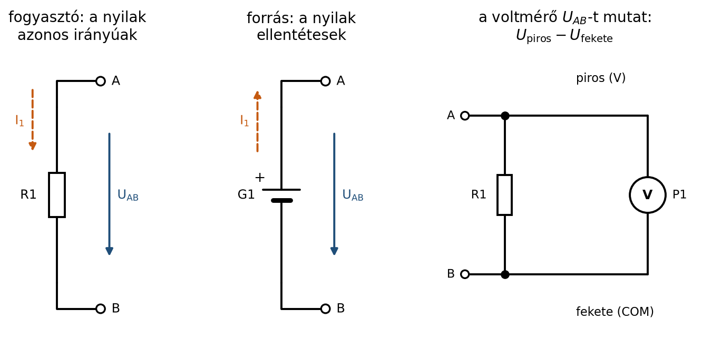
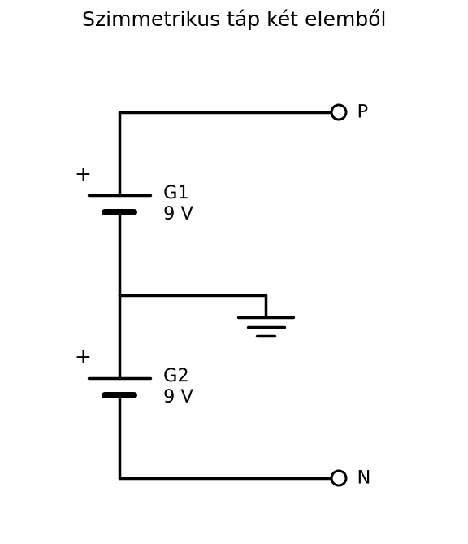
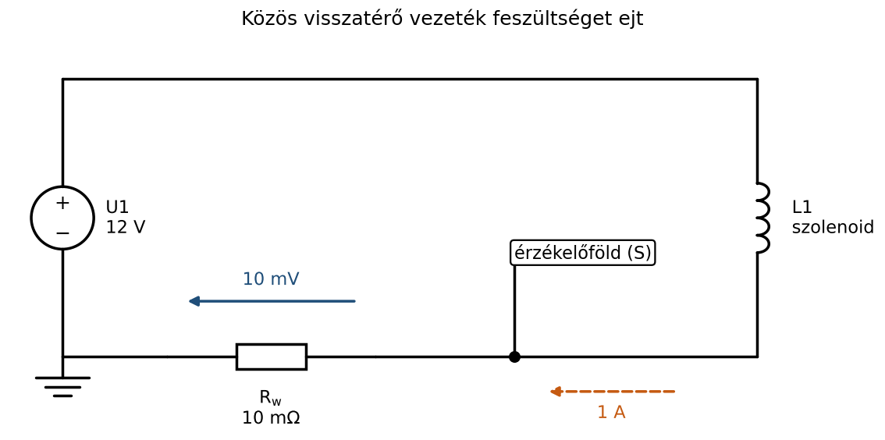

Mire leszel képes az alfejezet végén?
A szenzormodul kapcsolási rajzán ilyen feliratokat látsz: +12V, +5V, +3V3 és GND. Ráteszed a multiméter piros vezetékét a +3V3 pontra, a feketét a +5V pontra, és a kijelző −1,7 V-ot mutat. Elromlott a műszer? Ha felcseréled a két vezetéket, +1,7 V jelenik meg. És mit jelent egyáltalán az, hogy „a +3V3 ponton 3,3 V van”, amikor a műszernek két vezetéke van?
A válasz kulcsa, hogy a feszültség nem egy pont tulajdonsága, hanem két pont viszonya. Ha ezt megérted, a mérés, a rajzolvasás és később minden egyenlet egyszerűbb lesz.
Gondolj egy domborzatra. Egy hegycsúcs magasságáról csak akkor beszélhetsz, ha megmondod, mihez képest: a tengerszinthez vagy a völgy aljához. Két pont magasságkülönbsége viszont ugyanaz, bármelyik szintet nevezed nullának. Az áramkörben a magasság szerepét a potenciál, a magasságkülönbségét a feszültség játssza, a nullának választott szint pedig a referenciapont, a rajzon a föld (GND). A pozitív töltés a „magasabb” potenciálú pontból a fogyasztón át az „alacsonyabb” felé halad, és közben energiát ad le; a forrás emeli vissza.
A példakörben egy 12 V-os forrás három sorba kötött ellenállást táplál (az ellenállásról most elég annyi, hogy fogyasztó; a törvényét a következő fejezet adja meg). A köztük lévő csomópontok (olyan pontok, ahol elemek csatlakoznak össze) a rajzon A, B, C, D jelűek. Tudjuk, hogy az R1-en 5,1 V, az R2-n 3,6 V, az R3-on 3,3 V esik.

Gondolkodj előre! Mi történik a csomópontok potenciáljával és az ellenállások feszültségével, ha a föld jelét a D pontról a C pontra teszed át?
Az ábra középső oszlopa a válasz: minden potenciál ugyanannyival (3,3 V-tal) lejjebb csúszik, de egyik ellenállás feszültsége sem változik. A kör fizikailag semmit sem „érzett meg”.
Ha egy töltést elmozdítasz egy olyan helyen, ahol elektromos erő hat rá, munka történik: energia vándorol a töltésre vagy a töltésről.
Definíció. Az A és B pont közötti feszültség (jele ) az egységnyi töltésre jutó munka, amelyet az elektromos erők végeznek, miközben a töltés A-ból B-be jut:
Mértékegysége a volt: . Szavakkal: ha az A és B pont között 12 V a feszültség, akkor minden átjutó coulomb 12 J energiát ad le (ha és pozitív töltés megy A-ból B-be). A képlet állandó feszültségre vonatkozik; az átjutott töltés, az energia. Elemi töltésre 1 V-on J jut.
Definíció. Válasszunk egy pontot referenciapontnak, és mondjuk azt, hogy a potenciálja nulla. Egy tetszőleges A pont potenciálja (jele , görög fí) az A és a referenciapont közötti feszültség: . Két pont feszültsége a potenciálok különbsége:
A sorrend számít: az első index az a pont, ahonnan nézzük, a második, amihez képest. Ebből azonnal következik két hasznos szabály:
A második azért igaz, mert : a köztes pont potenciálja kiesik. A domborzat nyelvén: a csúcs és a völgy szintkülönbsége a két részszakasz szintkülönbségének összege (az egység mindhárom tagban volt). Ez a gondolat tér vissza a Kirchhoff-féle huroktörvényben (Kirchhoff törvényei, soros és párhuzamos kapcsolás).
A referenciapont áthelyezése minden potenciált ugyanazzal a számmal tol el: , ahol az új referencia. A különbségből a kiesik, ezért a feszültségek nem változnak.
A jelet csak itt, a bevezetésnél használjuk. A gyakorlatban a „+3V3 pont feszültsége” a földhöz képest értendő, és így írjuk: (csomóponti feszültség, a GND-hez képest). A GND rajzjele megállapodás: „ezt a pontot nevezzük 0 V-nak”. Nem jelent sem földbe ásott rudat, sem töltést elnyelő helyet.
Negatív feszültség akkor adódik, ha egy pont potenciálja alacsonyabb a referenciáénál. Ez nem kisebb vagy gyengébb feszültség, csak a „tengerszint alatti” pont. A motivációban V, a felcserélt vezetékekkel V.
Továbbvitt eredmény. A potenciál a választott referenciaponthoz képest értelmes, két pont feszültsége a potenciálok különbsége, , és ez a referencia megválasztásától független. Erre épül a hurok- és csomóponttörvény (Kirchhoff törvényei, soros és párhuzamos kapcsolás), valamint a mátrixos megoldó (A csomóponti potenciálok módszere és az MNA-megoldó).
A rajzon a feszültséget nyíl jelöli, amely a + referenciától a − felé mutat: az nyila A-nál indul és B-nél végződik. Ahogy az áramnyíl, ez is referenciairány: ha az eredmény negatív, B van magasabb potenciálon.

Fogyasztón (ellenállás, lámpa) az áram a magasabb potenciálú kivezetésen lép be, ezért a feszültség- és az áramnyíl azonos irányú. Forrásnál az energiát leadó töltés a belsejében „felfelé” halad: ott a két nyíl ellentétes. Ennek a teljesítménynél lesz jelentősége (Teljesítmény, energia, hatásfok és mértékegységek).
A multiméter egyenfeszültség-állásban a piros vezeték (a műszer V jelű bemenete) és a fekete vezeték (COM, közös) potenciálkülönbségét mutatja: . Ha a fekete a GND-n van, a kijelző a piros pont csomóponti feszültsége. Mérni tehát mindig két ponton kell. A műszer helyes bekötését és hibáit a Mérőműszerek és mérés fejezet tárgyalja részletesen.
Az időben állandó feszültség egyenfeszültség (), az időben változó pillanatértékét jelöli. Egy digitális kimenet például 0 V és 3,3 V között ugrál, az érzékelő jele lassan változik.
A telep és a tápegység a rajzon feszültségforrás: olyan elem, amely a két kivezetése között feszültséget tart fenn. Az ideális feszültségforrás modellje szerint ez a feszültség az áramtól függetlenül állandó. Valódi forrásnál nem egészen igaz, erről a Valós források, Thévenin és Norton alfejezet szól. Sorba kötött források feszültsége a fenti összegszabály szerint összeadódik: két 9 V-os elem egymás után 18 V. Ha a GND-t a két elem közé teszed, a felső szabad sarok +9 V, az alsó −9 V: így keletkezik szimmetrikus (kétoldali) táp.

A „föld” szó több dolgot takar:
| Elnevezés | Mire szolgál |
|---|---|
| jelföld | az érzékelő- és logikai jelek viszonyítási pontja |
| tápföld | a nagy fogyasztók árama itt tér vissza a forráshoz |
| alváz (ház) | a fém doboz; árnyékolásra, mechanikai szerkezet |
| védőföld | érintésvédelmi vezető a hálózati berendezésekben |
Miért nem mindegy? Az ideális vezeték modell, amely szerint a vezeték két vége azonos potenciálon van. A valódi vezetéknek kis ellenállása van, ezért ha nagy áram folyik rajta, a két vége között kis feszültség lép fel. Ha a szenzormodulban a szolenoid árama (1 A) és az érzékelő jele egy közös vezetékdarabot használ, és azon például 10 mV esik (feltételezett érték), akkor az érzékelő „földje” 10 mV-tal arrébb van, mint a mikrovezérlőé. A mérés ennyit téved. A föld tehát nem „nyeli el” az áramot: az áram a forráshoz tér vissza, és útközben feszültséget ejt.

A GND és a védőföld (PE) nem ugyanaz: egy telepes eszköz GND-jének semmi köze a konnektor védővezetőjéhez. A könyv törpefeszültségen marad; a hálózati érintésvédelem a villanyszerelés témája. Az áram élettani hatásáról és a törpefeszültségről, majd a földelési stratégiákról később lesz szó (Az áram élettani hatásai és a törpefeszültség, Földelési stratégiák és visszatérő áramutak).
Továbbvitt eredmény. A jelföld, tápföld, alváz és védőföld különböző fogalmak; a valódi földvezetéken folyó áram potenciálkülönbséget okoz. Erre épít két későbbi alfejezet: Az áram élettani hatásai és a törpefeszültség és Földelési stratégiák és visszatérő áramutak.
A példakörben V, V, V (mind a nyíl a felső kivezetéstől az alsó felé). Ellenőrzés: V, éppen a forrás feszültsége.
Referencia: D (). Alulról felfelé haladva minden elemnél hozzáadjuk a feszültségét:
Referencia: C (). Minden potenciálból levonjuk a régi V-ot: V, V, , V.
Ellenőrzés: V az első, V a második referenciával. Egyezik. Józanész-ellenőrzés: a negatív azt jelenti, hogy D a választott nulla (C) „alatt” van, ami a rajzon is látszik.
Energia: ha az R1 ellenálláson 1 mC töltés halad át, mJ energiát ad le.
A potenciálok és feszültségek táblázata egy egyszerű szótárral számolható:
drop = {"R3": 3.3, "R2": 3.6, "R1": 5.1} # feszültség alulról felfelé, V
phi = {"D": 0.0}
for node, below, r in [("C", "D", "R3"), ("B", "C", "R2"), ("A", "B", "R1")]:
phi[node] = phi[below] + drop[r]
def rebase(phi, ref):
"""Ugyanaz a kör, új referenciaponttal."""
return {n: v - phi[ref] for n, v in phi.items()}
def voltage(phi, a, b):
return phi[a] - phi[b]
for ref in "DCA":
p = rebase(phi, ref)
row = " ".join(f"{n}: {p[n]:5.1f}" for n in "ABCD")
print(f"ref {ref} {row} U_BD = {voltage(p, 'B', 'D'):.1f} V")
print(f"U(+3V3, +5V) = {3.3 - 5.0:.1f} V")ref D A: 12.0 B: 6.9 C: 3.3 D: 0.0 U_BD = 6.9 V
ref C A: 8.7 B: 3.6 C: 0.0 D: -3.3 U_BD = 6.9 V
ref A A: 0.0 B: -5.1 C: -8.7 D: -12.0 U_BD = 6.9 V
U(+3V3, +5V) = -1.7 VAz interaktív ábrán a kör és a potenciálmagasságok láthatók. Válaszd meg a referenciapontot, valamint a piros és a fekete mérőcsúcs helyét.
A feszültség az egységnyi töltésre jutó munka, , 1 V = 1 J/C. Mindig két pont között értelmes: , , . A potenciál a választott referenciaponthoz képest adott; a referencia áthelyezése minden potenciált eltol, a feszültségeket nem változtatja meg. A GND rajzjel megállapodás: 0 V. A negatív érték csak azt jelzi, hogy a pont a viszonyítási szint alatt van. A feszültségnyíl a + referenciától a − felé mutat; fogyasztón az áramnyíllal azonos irányú, forrásnál ellentétes. A voltmérő a piros és a fekete csúcs potenciálkülönbségét mutatja, ezért mérni mindig két ponton kell. Sorba kötött források feszültsége összeadódik, a közéjük tett GND szimmetrikus tápot ad. Jelföld, tápföld, alváz és védőföld nem azonos: a valódi vezetéken folyó áram feszültséget ejt, ezt a földelési tervezés veszi figyelembe.
1. feladat. J. Egy elektronra: J.
2. feladat. V, V.
3. feladat. V; V.
4. feladat. Mindegyikből levonjuk V-ot: A: V, B: , C: V, D: V. V, a forrás feszültsége.
5. feladat. GND alul: közép V, felül V. GND középen: alul V, felül V. A külső sarkok közti feszültség mindkét esetben 18 V.
6. feladat. A jel a mikrovezérlő földjéhez képest V (az összegszabály: jel–S plusz S–GND). A hiba %. Egy lépés mV, a hiba tehát kb. lépés. Ez a 12 bites felbontás nagy részét elrontja.
7. feladat.
nodes = "ABCD"
alap = rebase(phi, "D")
for ref in nodes:
p = rebase(phi, ref)
for a in nodes:
for b in nodes:
assert abs(voltage(p, a, b) - voltage(alap, a, b)) < 1e-9
print("minden referenciára azonos a 16 feszültség")minden referenciára azonos a 16 feszültségAz assert hibát dob, ha egyetlen pár is eltér; a tűrés a
lebegőpontos kerekítés miatt kell.
8. feladat. Nem. A két elem között nincs vezető út, ezért nincs semmi, ami meghatározná a két rendszer egymáshoz viszonyított potenciálját: azt véletlen töltések és a környezet szabják meg („lebegő” rendszer). Ha egy voltmérőt kötsz közéjük, a műszer a saját kis áramával kiegyenlíti ezt a különbséget, és a kijelzés nulla körülire áll. Határozott értéket csak akkor kapsz, ha a két elemet egy pontban összekötöd.